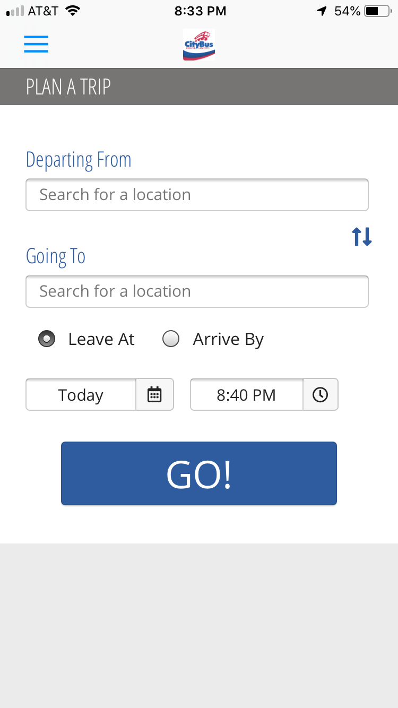
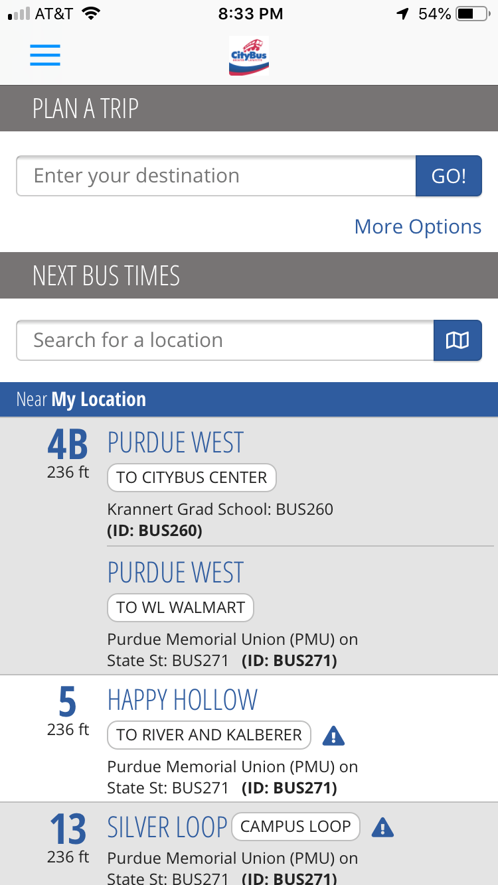
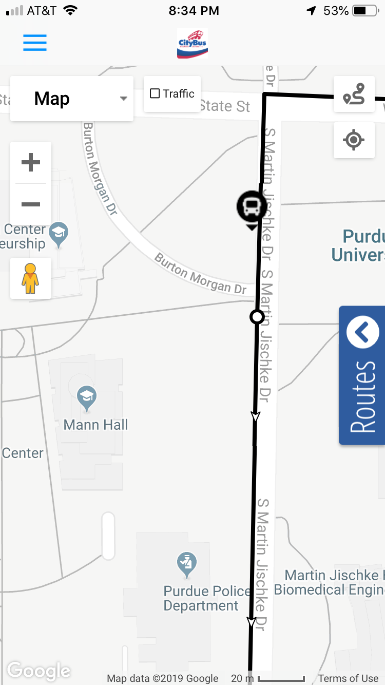

CityBus is rolling out MyRide, a new GPS-based bus location sysetm. Using MyRide, riders can access transit schedules and real-time GPS-based bus location information, track their bus on a map, and receiev transit news and route-specific alerts.
When the MyRide app is downloaded ona rider's phone, geolocation determines the closest bus stops to their location. And with one screen-tap, riders can view estimated departure times for the next buses and routes servicing these stops.
By selecting a favorite location or route, or entering a starting point and destination, riders can get real-time GPS-based information for all possible bus options. A trip planner can also make future transit plans. Riders can track the location, estimated departure time and passenger load of the selected bus on an interactive map powered by Google.
From their customer account, riders can subscribe to receive text, email or push-notifications containing bus departure information, including one-time or recurring notifications for specific routes, days and times. Another feature identifies detoured routes and temporary stops.
CityBus can also post news stories about weather, detours, or community events, publish route-specific or general news, or add pictures or video content.
Riders without data plans can get real-time information as well by texting a designated phone number. After inputting their stop number, the system will automatically return estimated departure times for the next buses.
"There are buses here at Purdue that help students navigate through campus qickly. The Citybus app lets me see where the buses are and which one(s) I should take to reach my destination the fastest." - Tara Hanover (Purdue Class of 2022)